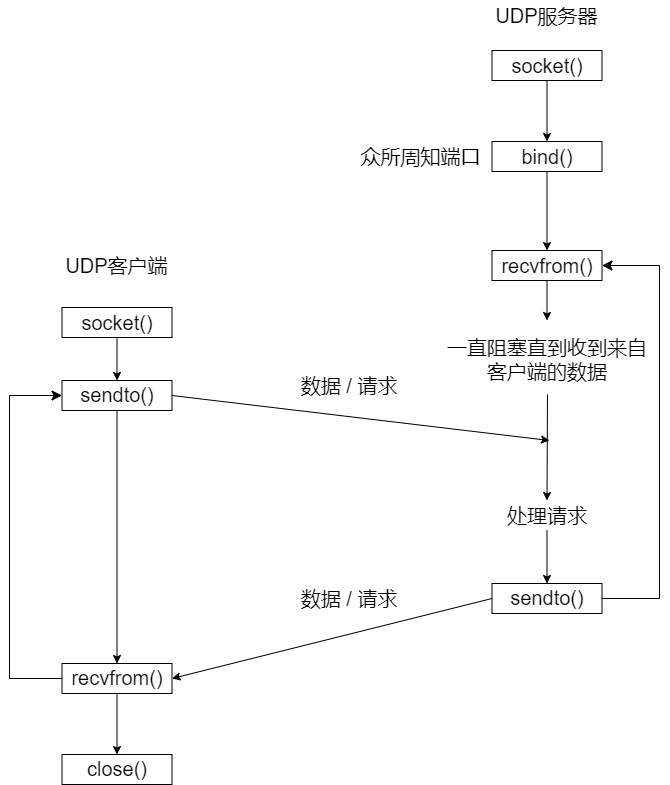

Python编程
Python网络编程
1.1 Socket定义
- Socket又称“套接字”，应用程序通常通过“套接字”向网络发出请求或者应答网络请求，使主机间或者一台计算机上的进程间可以通讯。
- Socket是对TCP/IP协议族的一种封装，是应用层与TCP/IP协议族通信的中间软件抽象层。
- Socket把复杂的TCP/IP协议族隐藏在Socket接口后面，对用户来说，一组简单的接口就是全部，让Socket去组织数据，以符合指定的协议。
1.2 socket库介绍
1.2.1 创建Socket
socket.socket函数的前两个参数的默认值是socket.AF_INET和socket.SOCK_STREAM，创建TCP socket时可以直接写成socket.socket()。
import socket
s = socket.socket(socket.AF_INET, socket.SOCK_STREAM)
1.2.2 连接服务器
以下三种都是合法的
s.connect(('localhost', 8000))
s.connect(('127.0.0.1', 8000))
s.connect(('www.baidu.com', 8000))
1.2.3 发送数据
发送数据有两个方法send和sendall send() 发送TCP数据，返回发送的字节大小。这个字节长度可能少于实际要发送的数据的长度。换句话说，这个函数执行一次，并不一定能发送给定的数据，可能需要重复多次才能发送完成。
data = "something you want to send"
while True:
len = s.send(data[len:])
if not len:
break
sendall() 发送完整的TCP数据，成功返回None，失败抛出异常
data = "something you want to send"
s.sendall(data)
1.2.4 接收数据
接收数据使用recv()函数
recv(buffersize[, flags) -> data
recv是Python中socket模块中的一个方法，用于接收来自套接字的数据。可以使用socket.recv(bufsize[, flags)方法调用，其中bufsize是值接收数据的最大字节数，flags是可选参数，用于控制接收数据的行为。如果调用成功，将返回接收到的数据。
当没有任何接收到任何数据时会一直阻塞直到有数据到达或者远端被关闭。当远端被关闭或所有数据都被读取时将返回空字符。
1.2.5 关闭连接
当连接不再需要时可以使用close关闭socket连接，关闭后的连接不能再进行任何操作。
sk.close()
1.2.6 实例
服务端 server.py
import socket
# 创建服务器套端接字
sk = socket.socket()
# 设置给定套接字选项的值
# sk.setsockopt(socket.SOL_SOCKET, socket.SO_REUSEADDR, 1)
# 把地址绑定到套接字
sk.bind(('127.0.0.1', 8898))
# 监听连接
sk.listen()
# 接受客户端连接
conn, addr = sk.accept()
while True:
# 接受客户端信息
ret = conn.recv(1024)
# 打印客户端信息
print(ret.decode('utf-8'))
# 结束处理
if ret == b'bye':
conn.send(b'bye')
break
info = input('>>>')
conn.send(bytes(info, encoding='utf-8'))
# 关闭客户端连接
conn.close()
# 关闭服务器套接字
sk.close()
客户端 client.py
import socket
# 创建客户端套接字
sk = socket.socket()
# 尝试连接服务器
sk.connect(('127.0.0.1', 8898))
while True:
# 发送消息
info = input('>>>')
sk.send(bytes(info, encoding='utf-8'))
# 接收消息
ret = sk.recv(1024)
# 结束会话
if ret == b'bye':
sk.send(b'bye')
break
# 打印消息
print(ret.decode('utf-8'))
# 关闭客户端套接字
sk.close()
1.2.7 UDP套接字
